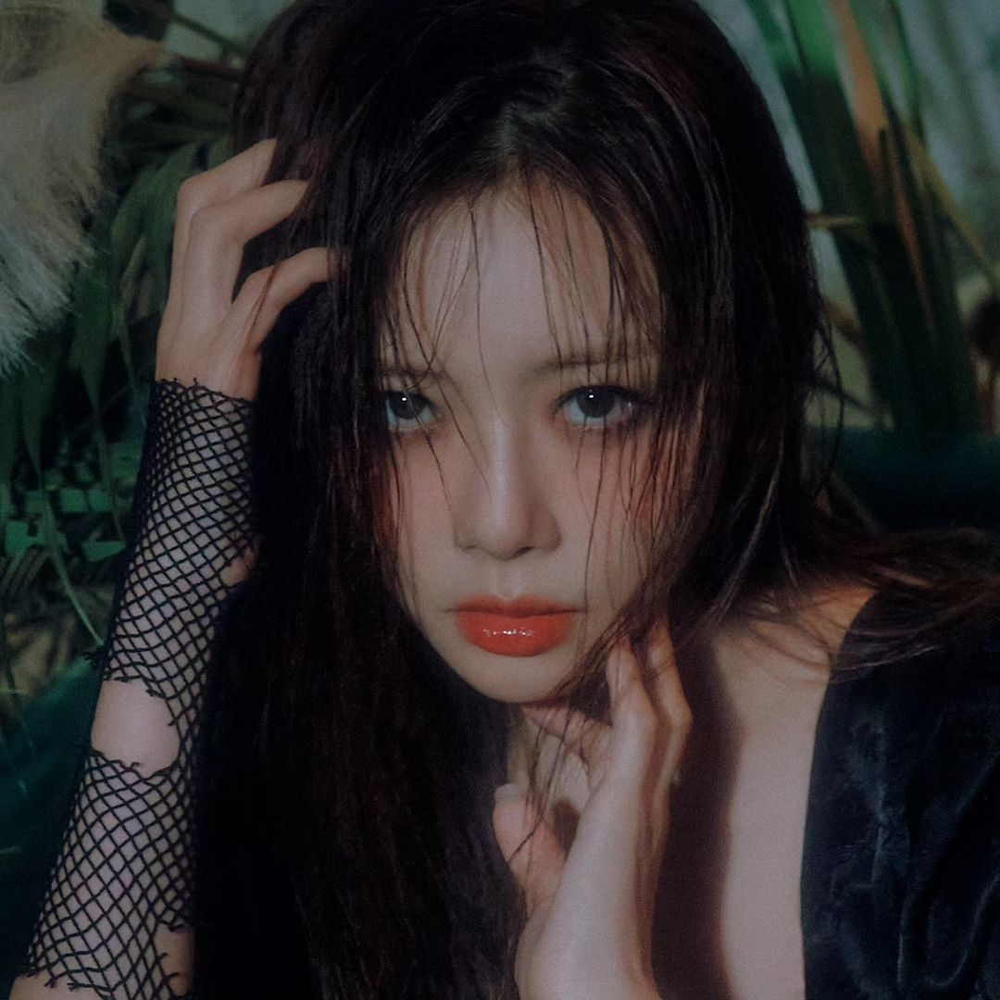
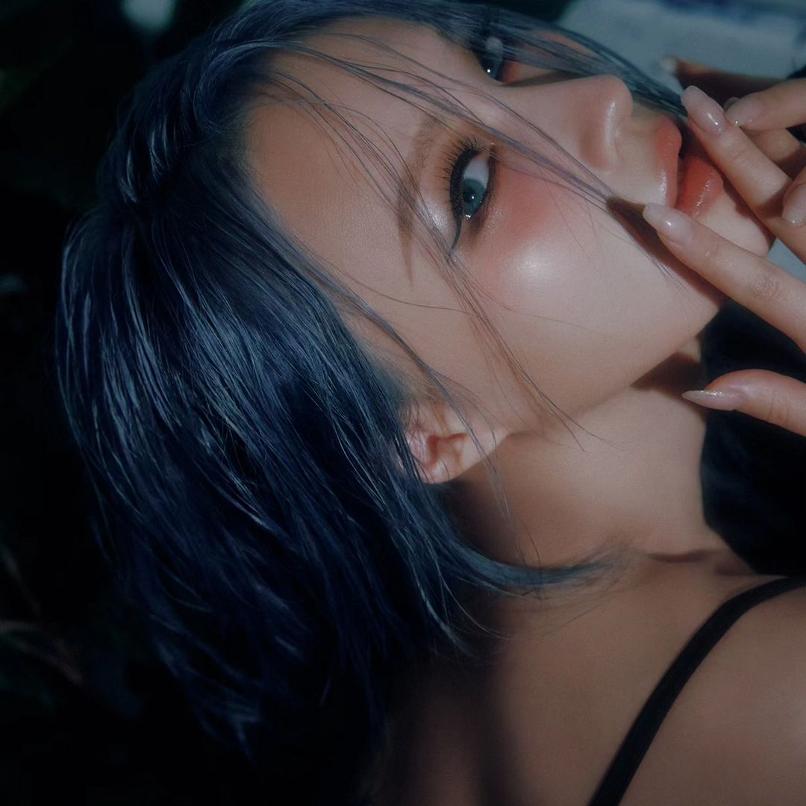
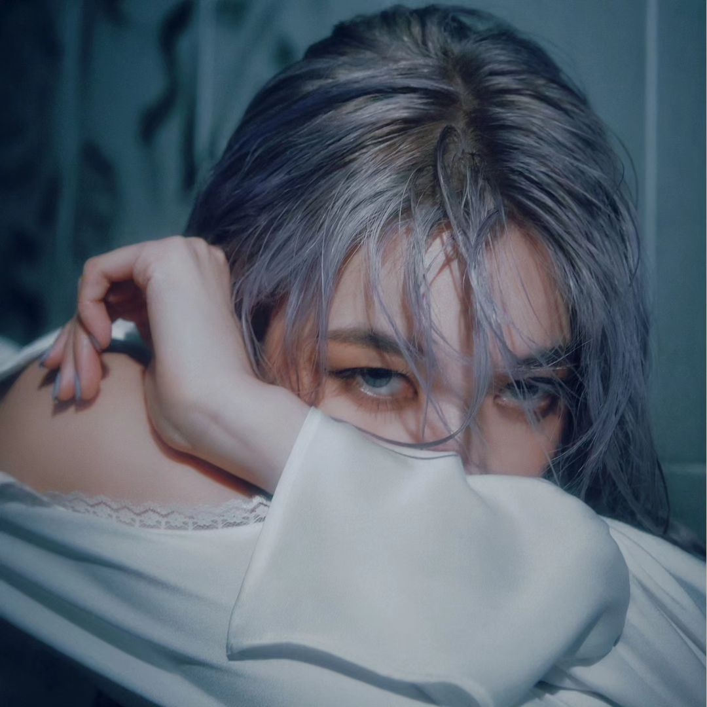
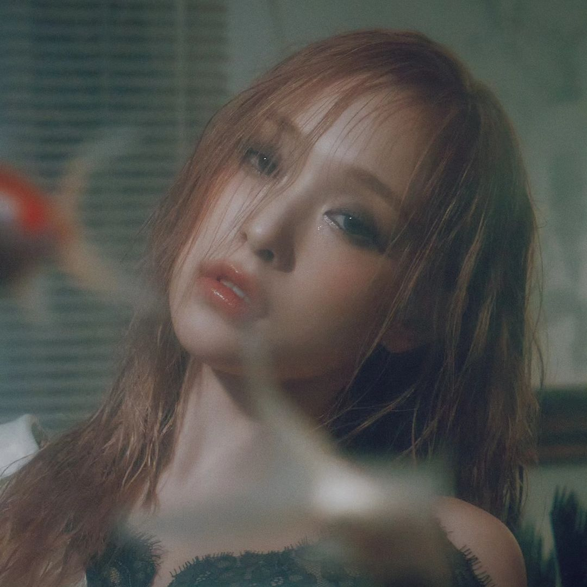

.svg)
WELCOME
TO THE
DREAM WORLD
Welcome to the world of DREAMCATCHER(드림캐쳐), an unique south korean 7 member girl group under Dreamcatcher Company, They are now also known as "The Face of Rock in K-pop" because of their distinctive sound with elements of rock and metal. Dreamcatcher debuted on January 13, 2017 with their debut song "Chase me" and since then they have only grown more and more with each comeback.
They have a strong and dedicated fanbase known as InSomnia who support the group very well, resulting in Dreamcatcher always getting good votes in various music shows and activities.
The 7 members of Dreamcatcher are:
JIU
SUA
SIYEON
HANDONG
YOOHYEON
DAMI
GAHYEON
Click here
to get to know more about the members.
HISTORY
OF
DREAMCATCHER
Dreamcatcher members are not just recent names in the industry. Before Dreamcatcher, 5 of the members were part of another group MINX, under the same company(known as Happyface Ent.)
MINX consisted of the members: Jiu, Sua, Siyeon, Yoohyeon and Dami. It had a completely different type of sound. MINX was a cute concept girlgroup with sweet songs about fun and love. MINX debuted on September 18, 2014 with the title track "Why Did You Come To My Home" but they could not manage to chart well in the kpop market at that time. MINX cameback again and released their first album on July 2, 2015 with the title track "Love Shake" but it also was not that successful. Even though MINX had some great songs as title track and B-sides but because of not getting enough attention ultimately MINX disbanded on November 29, 2016.